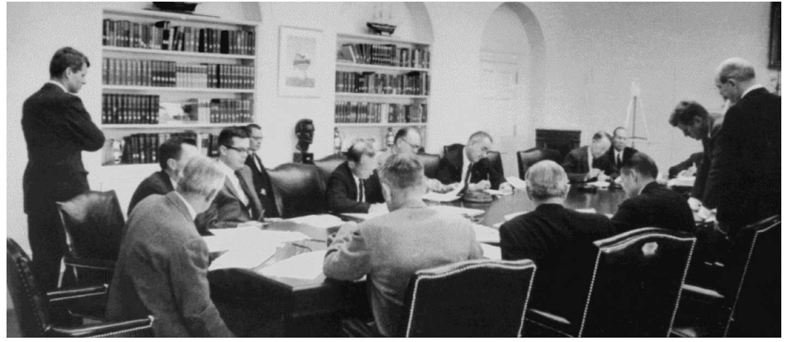
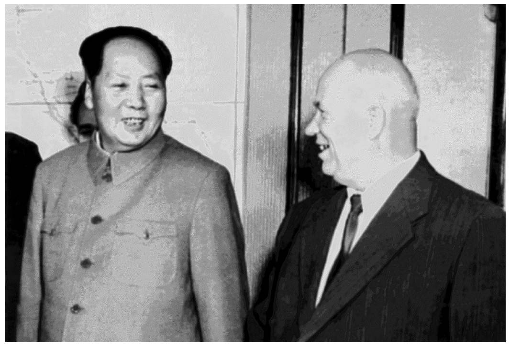

第二次世界大战结束的时候，西欧和东欧国家都被迫转而寻求两个新超级大国美国和苏联的支持。在军事方面，西欧依赖美国组织的北约，东欧依赖苏联组织的华约。在经济上，西欧依靠美国资助的马歇尔计划，东欧依靠苏联组织的经济互助委员会——经互会从理论上说应该从苏联获得援助，但实际情况正好相反。
华盛顿和莫斯科的主导地位之所以被接受，是因为面对冷战的压力，来自它们的支持变得不可或缺。但是，冷战在愈演愈烈数年之后，于1953年开始减弱。一个原因是在晚年变得越来越多疑和固执的约瑟夫·斯大林于1953年3月去世了。他的较年轻的继承者们准备缓和国外的冷战和国内的独裁统治。与此同时，在美国，新的艾森豪威尔政府则正在取代杜鲁门政府。这也有利于国际“解冻”，因为艾森豪威尔政府能在朝鲜缔结和约，而杜鲁门政府则会出于国内政治的考量而极难这样去做。因此，1953年7月，朝鲜战争宣告结束，从而消除了国际紧张局势中最大的一个根源。

图295 在古巴发现苏联导弹后，肯尼迪总统和他的顾问们召开了一些冗长而又令人痛苦的会议，以探讨如何应对。在这张照片中，总统（右二）俯身站在桌旁，他的弟弟、司法部长罗伯特·肯尼迪在左边踱步。
在接下来的月份里，苏联政府宣布，它也掌握了氢弹的机密。悖谬的是，这加强了和解进程。众所周知，美国在比基尼岛爆炸的那颗氢弹比广岛原子弹的威力还要大750倍，而后者炸死了14万人。除去最狂热的冷战斗士，所有的人都感觉到战争不再是国家政策的一个可行工具。
氢弹的威慑效果在1962年的古巴危机中表现出来，这次危机的突然发生是因为美国通过空中侦察发现苏联正在古巴建造导弹基地，而且美国的很大一部分地区不久都将处在其射程之内。1962年10月22日，肯尼迪总统在一次引人注目的广播讲话中宣布“隔离”，禁止船只向古巴运送进攻性武器，并要求撤走苏联战略导弹。但是，他没有要求消灭卡斯特罗政权，甚至也没有要求拆除古巴的防御导弹。当开往古巴的苏联船只改变航向时，当美国确信苏联油轮未带进攻性武器而放行时，很明显，这两个国家都不想打仗。最后，10月28日，赫鲁晓夫宣布，他已下令将苏联导弹撤出古巴，并在联合国监督下拆除了苏联设在古巴的所有基地。作为回报，美国结束封锁，并保证不侵略古巴。
尽管古巴危机得到了和平解决，但它却是一起临界事件——战争看上去一触即发，由此促成了几个限制核武器的协定：控制核武器试验协定（1963年）、禁止太空核武器协定（1967年）、拉美无核区协定（1967年）、在现有核国家以外不扩散核武器协定（1968年）、禁止海底核武器协定（1971年）、禁止使用生物武器协定（1971年）和第一个西方——苏联限制战略武器条约（1972年）。这些协定合到一起，在实质上缓解了冷战期间的国际紧张局势。
古巴导弹危机是一个极危险的侥幸，比当时受惊的世界所认识到的更危险。这一点在四分之一世纪后的1989年1月美国和苏联官员在莫斯科会面、回顾和反省当时的情况时变得很清楚。危机时的美国国防部长罗伯特·S. 麦克纳马拉从与莫斯科的讨论中得出以下结论：
导弹危机充满了错误信息、错误判断、错误计算的例子……这必然导致这样的结论：我们必须在可能的范围内寻求回到无核的世界。[3]
20世纪60年代和70年代期间，冷战在缓慢而痛苦地解冻。但在20世纪80年代，冷战却突然且出乎意料地结束了。原因既简单又富有戏剧性。发动冷战需要两方，第二次世界大战后这两方是超级大国美国和苏联。但在20世纪80年代，苏联这个超级大国却迅速衰弱到实质解体的地步。震惊的世界目击了苏联从我们的世界地图上消失，取而代之的是独立国家联合体。苏联如何和为什么变成独联体将在下一章中予以分析。

图296 1958年，毛泽东与苏联部长会议主席尼基塔·赫鲁晓夫在莫斯科交谈。这时中苏同盟已开始出现裂痕。
与苏联的解体一样令人吃惊的是苏中同盟的破裂。当得胜的中国共产党人在1949年建立人民共和国时，他们立刻得到了苏联的承认。包括英国和印度在内的20个国家也都先后承认了中国。但是，美国则继续将流亡在台湾的蒋介石政府视为中国的合法政府。北京因而转向莫斯科，并于1950年签署了为期30年的《中苏友好同盟互助条约》。根据该条约的条款，苏联将帮助中国建设一支大规模的现代化军队，并开始实现雄心勃勃的工业化计划。
20世纪50年代后期，这一苏中同盟开始出现破裂的迹象。共产党世界中这一惊人的重大分裂似乎部分是源于国家利益冲突，部分则是源于意识形态冲突。国家利益问题由传统的物质原因如边界划分造成。在苏联地图上，分隔两国的2000英里长的分界线已得到详细精确的描绘。而在中国地图上，有些地段则仍被划为“未划界”，其中包括帕米尔高原东部边境、黑龙江和乌苏里江汇合处的一些岛屿，以及与蒙古相接的几乎整个边境。这些领土过去曾属于中国，19世纪被沙俄吞并，现在共产党中国提出了主权要求。在这些有争议的边界地区已经发生了许多武装冲突。
在中苏争端的初期，意识形态问题似乎比边界问题更重要。在中国，多年的革命斗争已促成了一种人类和社会关系的新观点——一种人人平等的共产主义秩序的观点，在这里，个人行为受为社会服务的愿望而不是私利所驱使。因此，尽管苏联式的五年计划在进一步工业化和提高生产率方面是成功的，但毛却不愿意接受日益拉大的收入差距和这些计划所立足的官僚精英统治。这解释了1958年的“大跃进”和1966年的“文化大革命”，这些运动的口号是“打倒官僚主义”和“为人民服务”。苏联人认为这是笃定要失败的乌托邦式浪漫主义，这也是他们向毛泽东中止援助的一个原因。
1976年毛泽东逝世以后，中国和苏联之间的意识形态分歧开始变得模糊不清。毛泽东的继承者们发起了一场“现代化”运动，它不仅采取了以前被指责为“修正主义”的措施，而且还沿着这条道路继续往下走，走到了“社会主义市场经济”。这些措施包括恢复包产到户，取消人民公社；在工厂以个人经理取代革命委员会；奖优惩劣；从工业的自力更生转向大规模地引进设备和技术。
这一后毛泽东时代的计划已从根本上改变了冷战格局。苏联和中国这两个社会主义巨人在与资本主义西方的全球性斗争中已不再是亲密的同盟。相反，它们在寻求实用经济战略方面正在相互竞争，以满足本国人民不断增长的消费期望。冷战世界格局正是以这种方式让位给一个迥异的世界格局，这一世界在20世纪90年代逐步成型，并将持续到21世纪。
[推荐读物]
第二次世界大战的外交和随之而来的冷战是许多历史学家争论的主题。传统的观点认为苏联应对冷战负主要责任，这类的著作有：H. Thomas所著的Armed Truce：The Beginnings of the Cold War 1945-1946（Atheneum出版社，1987）；R. J. Maddox所著的The New Left and the Origins of the Cold War（Princeton University出版社，1973）和J. L. Gaddis所著的The United States and the Origins of the Cold War, 1941-1947（Columbia University出版社，1973）。修正主义的解释认为西方应负责任，或应比苏联负更多的责任。最早详细提出这种观点的是D. F. Fleming所著的The Cold War and its Origins，1917-1960，2 vols.（George Allen & Unwin出版社，1961）。这一论点已被其他作者作了详尽阐述，例如：G. Kolko所著的The Politics of War：The World and U.S.Foreign Policy 1943-1945（兰登书屋，1969）；W. La Feber所著的America，Russia and the Cold War（John Wiley出版社，1968）；T. G. Paterson所编的Cold War Critics：Alternatives to American Policy in the Truman Years（Quadrangle Books出版社，1972）；N. D. Houghton所编的Struggle against History：U. S. Foreign Policy in an Age of Revolution（Simon & Schuster出版社，1972）和B. A. Weisberger所著的Cold War，Cold Peace：The United States and Russia since 1945（Houghton Mifflin出版社，1984）。关于杜鲁门主义和近东，见B. Kuniholm所著的The Origins of the Cold War in the Near East（Princeton University出版社，1980）和L. S. Wittner所著的American Intervention in Greece（Columbia University出版社，1982）。最后，R. L. Garthoff所著的Detente and Confrontation：American Soviet Relations from Nixon to Reagan（Brookings出版社，1985）考查了1966年以来的美苏关系。
有关远东的外交，下列著作中也有不同的解释：Y. Nagai和A.Iriye所著的The Origins of the Cold War in Asia（Columbia University出版社，1977）；Tang Tsou所著的American’s Failure in China 1941-1950（University of Chicago出版社，1964）；W. I. Cohen所著的America’s Response to China（John Wiley出版社，1971）；B. Cumings所著的The Origins of the Korean War（Princeton University出版社，1984）以及J. Halliday 和B. Cumings所著的Korea：The Unknown War（Pantheon出版社，1988）。
关于全球两极主义的结束，见W. S. Vucinich编著的At the Brink of War and Peace：The Tito-Stalin Split in a Historic Perspective（Columbia University出版社，1982）；W. G. Rosenberg和M. B. Young所著的Transforming Russia and China：Revolutionary Struggle in the Twentieth Century（Oxford University出版社，1982）和R. J. Barnet所著的The Alliance：America，Europe and Japan（Simon & Schuster出版社，1983）。
[注释]
[1]W. S. Churchill, The Second World War：The Grand Alliance（Houghton Mifflin，1950）, p. 373.
[2]P. E. Mosely, “Face to Face with Russia,” Headline Series, No. 70 （July-August 1948）, p. 23.
[3]New York Times, October 26，1989.